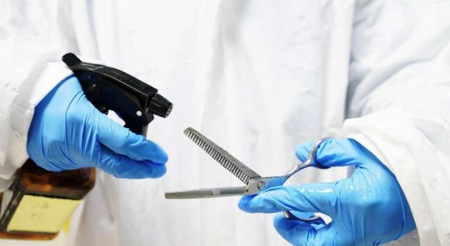
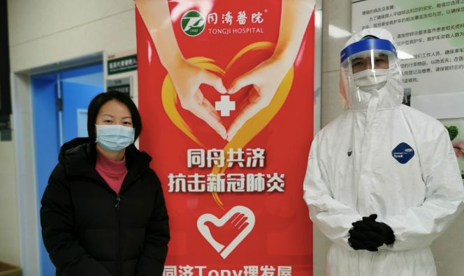
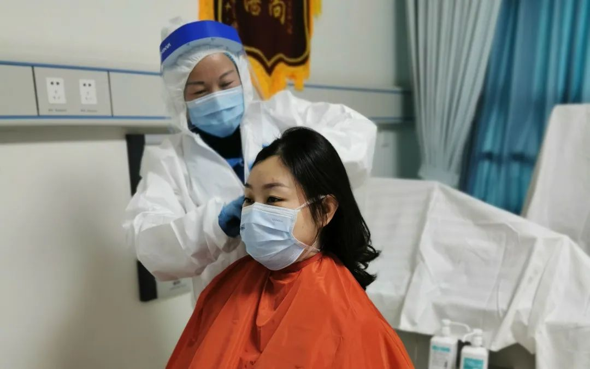

入夜，吾与妖精同行
原文链接 备份链接 2月18日，下午六点半，天气也像戴了口罩，灰蒙不爽。七点后，小区依然处于武汉最严管制中，人车限行。因为有抗疫指挥部的放行证明，我们得以出了小区。 这天的工作是接收来自北京的一车物质：女性卫生用品。 根据一周前报道，截 …
***** *****
*****
*****他们都希望，和这座城市的人们一起，用自己的方式向医护人员表示谢意。*****

武汉同济医院理发屋，志愿者在剪刀上喷洒酒精。受访者供图
文 | 新京报记者 张惠兰
编辑｜王婧祎 校对 | 卢茜
►本文约3280字，阅读全文约需6分钟
喷洒消毒水、穿上防护服、戴上口罩和手套，拿起用75%酒精消毒过的剪刀……如果不是这场突如其来的疫情，理发师王璐无法想象，他有朝一日会这样给顾客理发。
顾客们也与以往不同，他们往往疲惫不堪，有人往椅子上一靠，没说几句话就闭目养神；对发型也没有过多要求，只求剪短。
2月15日以来，在武汉同济医院中法新城院区的门诊大厅，这样的场景每天都在发生。
同济医院中法新城院区是武汉市新冠肺炎重症和危重症病人的收治中心之一。全天24小时，本院及全国多支救援队的7700多名医护人员，交班轮换，维系着这架庞大救治机器的运转。
收治患者的病区是医护人员与病毒战斗的“主战场”。在“战场”上，头发看似不起眼，却可能绊住“战士们”的脚步。在防护帽里闷久了的头发，被汗水浸湿，贴伏在头皮上，令人不适，长发掉落出来，还可能成为传播病毒的媒介。可由于武汉市内理发店悉数关门歇业，理发成了难题。
为了解决数千名医护人员的理发问题，王璐和几位理发师志愿者在这里集结，“Tony理发屋”正在营业。

武汉同济医院Tony理发屋的志愿者和前来理发的医护人员合影。受访者供图
开在门诊大厅里的理发屋

王璐是地道的武汉人，在青山区经营一家理发店。疫情发生后，理发店暂时歇业。2月15日，王璐在一个志愿者群里看到同济医院招募理发师的消息，他立刻拨通了电话。
同济医院后勤处员工、负责组织本次活动的蒋思思告诉新京报记者，在同济医院，有来自全国各地医疗队的4000多名“外援”，再加上本院的一线医护人员，总共有7700多名医护人员。持续奋战一个多月，许多医护人员的头发长了，但因为疫情的缘故，社会上的理发店基本都在歇业，这么多人的理发问题怎么解决呢？
2月14日，蒋思思和同事试探性地问了问自己熟悉的理发师，他们都愿意来，但无奈身在老家，短时间内回不来，后勤处便决定向社会公开招募志愿者。
传播效果超乎他们的想象。短短一天内，报名电话从全国各地打来，远至东北，考虑到交通阻隔和感染风险，对外地的理发师，蒋思思和同事只好婉拒。他们联络了数位本地理发师志愿者，2月15日，“Tony理发屋”正式开业。
由于中法新城院区专门收治重症和危重症患者，为了保障理发师和医护人员的安全，后勤处在理发屋的选址上做了仔细考量。蒋思思介绍，因为门诊暂停，原门诊大厅所在的A区一楼变为员工通道，不接待任何患者也没有病人通行，且此前已经过全面消毒，“是整个院区最安全的一个地方”。
于是，他们在这里开辟出几间办公室作为理发屋，为了避免人员聚集，除了较大的办公室安排了两名理发师，其余都确保一个理发师一间屋子。
特殊时期，理发屋的布置只能从简。一面镜子、一把椅子，没有寻常理发店里洗头用的躺椅和水池，只能用喷壶来打湿头发。

Tony理发屋的志愿者和一位医护人员合影。受访者供图
设备虽然简陋，但理发师的防护装备绝不能少。后勤处为理发师们准备了防护服、面罩、手套、口罩等全套防护装备。王璐告诉新京报记者，需要先往身上喷洒消毒药水消毒，然后才能进门穿戴防护装备。
理发的过程中，消毒和防护也须一丝不苟。来参加志愿服务的理发师叶丽说，每理完一位医护人员，他们必须更换一次手套，包括梳子、电推、剪刀在内的理发工具也要经75%酒精多次喷洒消毒。
每天结束工作后回家，进门前，叶丽也要用消毒液喷洒全身，擦拭鞋底，再洗个澡之后，才会和家人同桌吃饭。
“尽量剪短”
**
“尽量剪短。”
几天来，这是王璐和叶丽听得最多的一句话。
他们服务了许多两个月都没剪头的医护人员，有的人本打算赶在年底理发，结果临时接到通知，没和家人过上春节就赶来武汉支援，有的男医生头发已经遮住了半个耳朵，“和现在网上说的F4造型也差不离了”。
王璐亲身体会过头发长时间闷在防护帽里的感受。他以前留着一头长发，戴了一个多小时防护帽、给五六个人理完发后，帽子里面已经布满水汽，无比难受。后来，他干脆把头发剃成了板寸。
蒋思思介绍，除了容易出汗外，一线医护人员直接与病人接触，长发一旦暴露在空气中，会增加感染的风险，另外，一天工作下来，医护人员都是“恨不得倒头就睡”的状态，清洗长发也会额外增加他们的负担。
因此，王璐接待的男医护人员几乎是“能剪平头就剪平头”，对于女士们，则要顾及她们的爱美之心，在保留她们原有发型的基础上，剪短、打薄，同时清理干净她们发际线周边的碎发，防止碎发钻出帽沿。

志愿者正在帮一位男医护人员剃光头。受访者供图
蒋思思告诉新京报记者，对于医护人员应当理什么样的发型，医院没有任何规定，所有医护人员都是自愿前来理发，头发剪成什么样，也完全取决于他们跟理发师的沟通。
“很多护士姐姐妹妹说我没有别的要求，剪短后我可以把头发扎个小鬏鬏，好戴帽子、好穿衣服就行了。”叶丽说，同为女性，她特别能理解她们的心情。2月17日那天，她服务的几位女医护人员恰好都计划今年5月结婚，她们对叶丽说，只要到婚礼时还能做个发型就可以了。
2月18日，王璐碰到了一位吉林医疗队的年轻女医生，一坐下，对方就要求把头发剪短。王璐先是剪了个一寸多长的小男孩发型，不料对方不满意，让他继续剪短，“干脆剪成一个当兵的寸头了”。剪毕，女医生和一位女同伴会合，王璐一看，嚯，同伴竟然剪得比女医生还短，也就是“光头长了一两个礼拜”的长度。
王璐说，疫情当前，不少女医护人员可能尝试了“这一辈子都不敢尝试的发型”。解开围布，看着镜子里的自己，不少人会挑高眉毛，睁大眼睛，惊讶之余，难免有不舍和失落。不过，女“战友”们也会互相安慰，“我也剪了，你也剪了，大家都一样，都不吃亏了。”

叶丽正在帮一位女医护人员头发剪短。受访者供图
“每个武汉人都觉得医护人员是最至高无上的”
**
“Tony理发屋”里没有音响设备，为了调节气氛、帮助医护人员排解疲劳，王璐和叶丽会努力打开话匣子，陪他们聊聊天。
不少外地医疗队员说，从没想过自己会以这种方式来到武汉，车子穿行市区，街道却空空荡荡。王璐问他们，等疫情结束后，还打算再来武汉吗？大多数人给出肯定答复，说要重新认识这座城市。王璐便马上发挥东道主的精神，热情推介起武大马上要盛开的樱花，和曾经遍布街头巷尾的热干面。
有的医护人员会聊起自己的家人。一位医生孩子年幼，他已经二十多天没回过家，每天只能借视频解思念之苦。一位女护士新婚燕尔，但疫情发生后，她抢先报名上了一线。
也有医护人员坐下后，寥寥数语交代下发型，就倚在靠背上闭目养神。看着他们脸上的疲惫，叶丽不忍打扰，唯有默不做声地理发。
王璐说，经此一役，自己从未像现在这样对医护职业充满敬佩，“你要问武汉市民的话，可能这个时候每个武汉人都觉得医护人员是最至高无上的”。
他听说，有市民给外地医疗队送去了地道的纯手工热干面，有饭店老板免费给医护人员送饭菜，还有不少市民号召，等疫情结束后，武汉应该对全国来支援的医护人员免费开放旅游景点。
蒋思思说，这几天，仍然不断有理发师打来电话报名，随着人员的增加，后勤处也将给理发师们排班，以保证他们有充足的休息时间。
在同济医院之外，仍有巨大的理发需求尚待满足。据2月20日国务院联防联控机制新闻发布会上的数据，截至2月19日，全国已有278支医疗队、32395名医务人员驰援湖北。王璐说，自己所在的志愿者群里，有的理发师志愿者一天要跑上四五个医疗队，忙碌到深夜。
少有人知的是，由于长时间捂在橡胶手套里，每天用消毒水反复冲洗，理发师们的双手已经发白、起皮；为了避免室内空气流动传播病毒，医院关闭供暖设备，防护服下，他们必须穿上厚厚的衣服，动作只能放缓下来；工作时，他们戴着双层医用外科口罩，话说多了，不免气喘。
但王璐和叶丽都心甘情愿。尽管每天都要绷着一根弦，但叶丽觉得志愿工作让她感到踏实：“感觉自己可以参与一点点，好像心里会好过一点。”王璐也说，等同济医院的义剪工作告一段落，他还要和同伴们继续到其他医疗队去服务。
他们都希望，和这座城市的人们一起，用自己的方式向医护人员表示谢意。
*洋葱话题*
*▼*
*****你想对志愿者们说什么？*****
*后台回复关键词*****“洋葱君” ，加入读者群****
***推荐阅读***


十堰“战时管制”：五十名志愿者与五千名居民的自助生活

*********既然在看，就点一下吧****** *********
*********
原文链接 备份链接 2月18日，下午六点半，天气也像戴了口罩，灰蒙不爽。七点后，小区依然处于武汉最严管制中，人车限行。因为有抗疫指挥部的放行证明，我们得以出了小区。 这天的工作是接收来自北京的一车物质：女性卫生用品。 根据一周前报道，截 …
原文链接 备份链接 “ - 疫 情 之 下 - 武汉的疫情就像一簇紧簇的乌云，笼罩在每一个人的心头。但所幸，在这个受伤的城市中，在每台志愿者车里，在疲于奔波的路上，总有那么一群可爱的人，温暖着我们前线医护工作者的心。 ” 1 2020年 …
原文链接 备份链接 刘洋 大姨：同济医院一线工作者 医生会暴露感染很大一部分原因是， 有大量市民前期隐瞒病史 ———————————————— 我家在X医院附近，大姨是同济医院的医护人员，她对目前一线的情况比较了解。 20号中央了解武 …
原文链接 备份链接 武昌医院医生刘昭在得知上了ECMO消息时，当时就掉了泪，他告诉《人物》：「上了这个机器能救过来的概率很小，它对新生儿比较起作用，（成人）重病成功率只有20%到30%，希望是很渺茫的。」 刘智明最终不是那个残酷概率里的幸 …
原文链接 备份链接 这次来武汉，我从楼上看下去， 整个大街空无一人，这样的武汉我第一次见湘雅二医院医护人员全副武装，进入隔离病房。受访者供图，下同 一瓶剁辣椒，一支哮喘药，湘雅二医院的刘先领找齐“保命”的家伙，准备去武汉。 这是元宵节前一 …